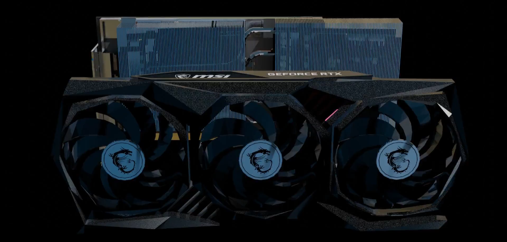
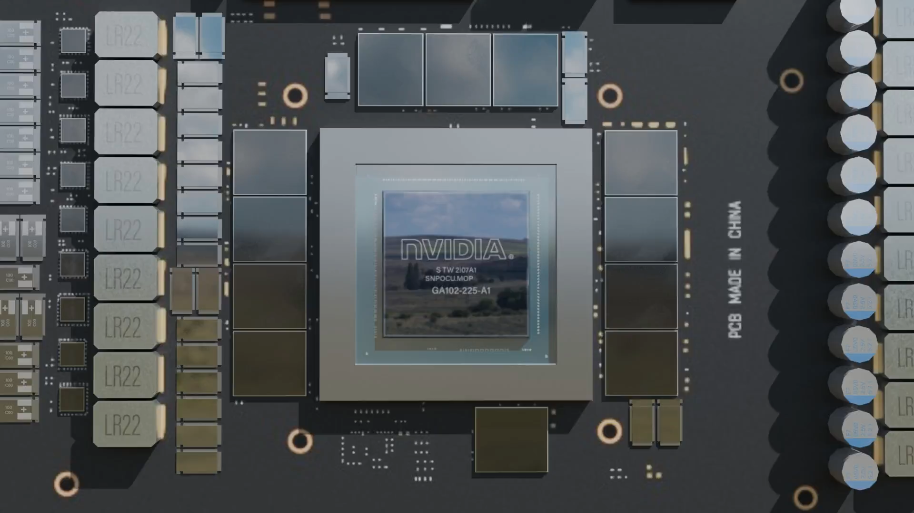

Artificial Intelligence
You've heard of it before!
Artificial Intelligence (AI) is a revolutionary field of computer science that allows machines to perform tasks requiring human-like intelligence.
Examples of these are: learning, reasoning, and decision-making. By the usage of advanced algorithms and vast datasets, AI systems can identify patterns, make predictions, and improve over time through machine learning and deep learning. One of the reason's of AI's success is it's specialized hardware, particularly NVIDIA's cutting-edge chips. Originally designed for graphics rendering, NVIDIA's GPUs have evolved into powerful AI accelerators, with innovations like Tensor Core technology crossing it's boundaries in various fields. These chips power applications ranging from computer vision to natural language processing, enabling advancements in self-driving cars, virtual assistants, and more. The seamless integration of software and hardware continues to expand AI's capabilities, making it an integral part of everyday life. As technology advances, NVIDIA's AI chips and other high-performance computing tools will remain critical in unlocking AI's full potential, and improving it further.

We mentioned NVIDIA's GPUs earlier, let's dive deeper into what they actually are.
A GPU, short for Graphics Processing Unit, is a specialized processor designed to handle complex graphical computations and rendering tasks. Unlike CPUs, GPUs excel at performing parallel operations, making them ideal for processing large datasets simultaneously. They are widely used in gaming, video editing, and AI applications due to their ability to accelerate tasks like image rendering and machine learning. As mentioned earlier, GPUs are essential for AI's processing as they provide extreme speeds for processing large sums of data.
Let's take a look inside one of NVIDIA's GPUs, RTX 3080.
This is the RTX 3080 MSI
These are the cooling fans, responsible for cooling the GPU by bringing the hot air out, as the GPU generates heat when being used, and depending on the usage it can get really hot quickly.
This is the heatsink, which is typically made of aluminum, it's purpose is to transfer the heat from plates on the back that touch the 'hot spots'. This heat then gets transferred through the plates and is blown away by fans.

Lastly, the die. The die is the chip that provides the base for everything else to run. Surrounding it are VRAM modules, which store memory so the die can get quick access to the data it needs.
This is the RTX 3080 MSI.
Artificial Intelligence's Evolution
The Birth of AI (1956)
In 1956, the Dartmouth Conference marked the formal beginning of AI as a field of study. Researchers envisioned creating machines that could "think" like humans. Early experiments included symbolic reasoning and problem-solving. This foundational moment laid the groundwork for decades of innovation. AI's journey had officially begun.
Frank Rosenblatt infront of his perceptron.
The Rise of Expert Systems (1970s)
Expert systems, which mimicked human decision-making, gained traction. Industries used AI to solve complex problems, like medical diagnosis and logistics. Programs like MYCIN and XCON showcased AI's potential for real-world applications. This era demonstrated AI's ability to assist, not replace, human expertise. Businesses began to adopt AI for efficiency and accuracy.
Edward Feigenbaum (sitting), director of the Computation Center, with members of the Board of Directors of the Computation Center.
The AI Winter (1970s-1990s)
Funding and interest in AI dwindled as progress slowed. Unrealistic expectations led to disappointment and skepticism. Researchers faced technological limitations and lacked sufficient computing power. Despite setbacks, a small group continued foundational research in the shadows. This period emphasized the importance of resilience and realistic goals.
Briefing for US Vice President Gerald Ford in 1973 on the junction-grammar-based computer translation model.
The Big Data & Deep Learning Revolution (2010s)
The explosion of big data and GPUs transformed AI's capabilities. Neural networks evolved into powerful deep learning models. Breakthroughs like image recognition (e.g., ImageNet) amazed the world. AI-powered tools like Siri, Alexa, and Google Translate became household names. Machine learning revolutionized industries from healthcare to self-driving cars.
NVIDIA's H100 AI Chipset.
Generative AI and the Future (2020s)
Generative AI models like GPT and DALL·E opened new frontiers. Machines could now create realistic art, music, and human-like text. AI-enhanced creativity transformed fields like entertainment and design. Ethical concerns emerged regarding bias, misinformation, and job displacement. The future of AI is boundless but demands careful stewardship.
ChatGPT.
The Present: AI in Everyday Life
AI is now deeply integrated into our daily lives, transforming industries from healthcare to entertainment. Breakthroughs like DeepSeek, an advanced AI model, are driving innovations in data analysis and pattern recognition. DeepSeek is used in fields like finance, healthcare, and creative industries, improving decision-making. As AI continues to evolve, the focus on ethics, safety, and transparency grows stronger. With ongoing advancements in hardware and software, the AI revolution is accelerating, becoming a central part of technology's future.
DeepSeek.
In Conclusion:
Artificial Intelligence has come a long way, and its journey is far from over. As we continue to explore new frontiers, the possibilities are boundless. Thank you for joining us on this enlightening adventure